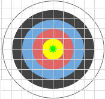
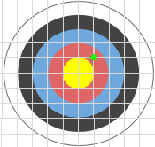
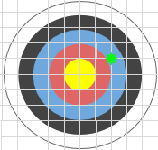
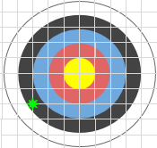
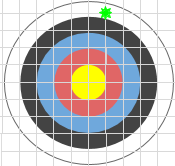
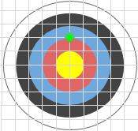

A l'esport de tir amb arc un arquer obté una puntuació segons l'anell on clava la fletxa. En una diana com la aquesta, rebria 5 punts al color groc, 4 al vermell, 3 al blau, 2 al negre i 1 al blanc.
L'anell groc té un radi de 5cm, i cada anell és 5cm més gran.
Si el tir cau justament sobre el límit d'un anell, es considera que la puntuació és la que correspon a l'anell de menys puntuació.
Input Format
La entrada consta de 2 nombres decimals (X, Y) que indiquen la posició on s'ha clavat la fletxa respecte al centre de la diana (0,0).
Constraints
Es garanteix que la distància al centre de la diana sempre serà menor que 25.
Output Format
S'imprimirà la puntuació obtinguda amb el tir.
Sample Input 0
0 0
Sample Output 0
5
Explanation 0
Just al centre de la diana són 5 punts

Sample Input 1
5 5
Sample Output 1
4
Explanation 1

Sample Input 2
10 5
Sample Output 2
3
Explanation 2

Sample Input 3
-15 -10
Sample Output 3
2
Explanation 3

Sample Input 4
20 5
Sample Output 4
1
Explanation 4

Sample Input 5
0 10
Sample Output 5
3
Explanation 5
Ha fet diana just al límit entre l'anell vermell i el blau, per tant es compta la puntuació del blau.

Sample Input 6
0.1 24.9
Sample Output 6
1
Sample Input 7
7.1 7.9
Sample Output 7
3
Sample Input 8
20 0
Sample Output 8
1
Sample Input 9
-2.67 4.89
Sample Output 9
4